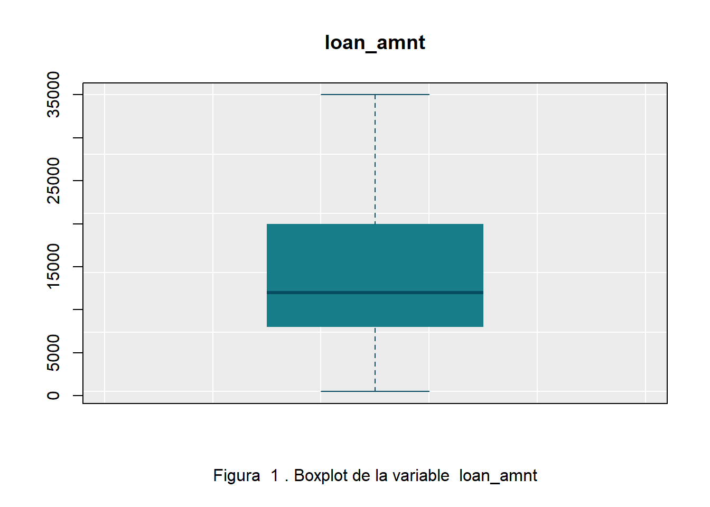
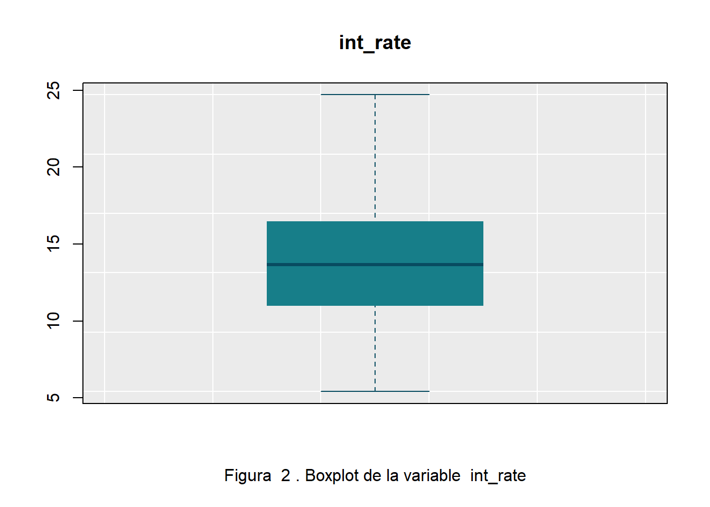
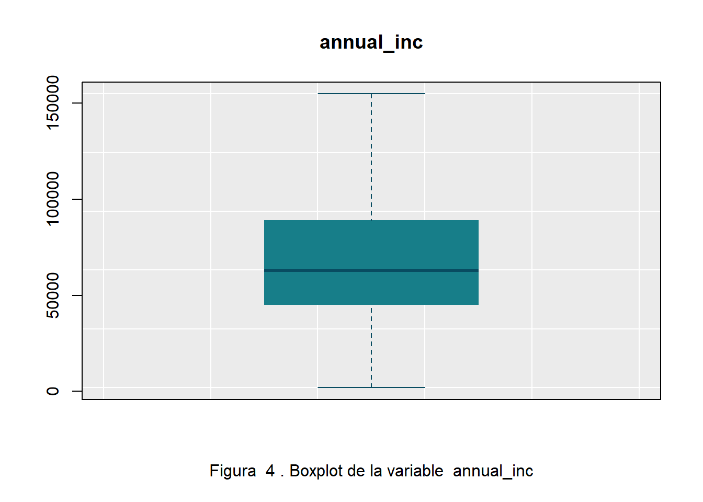
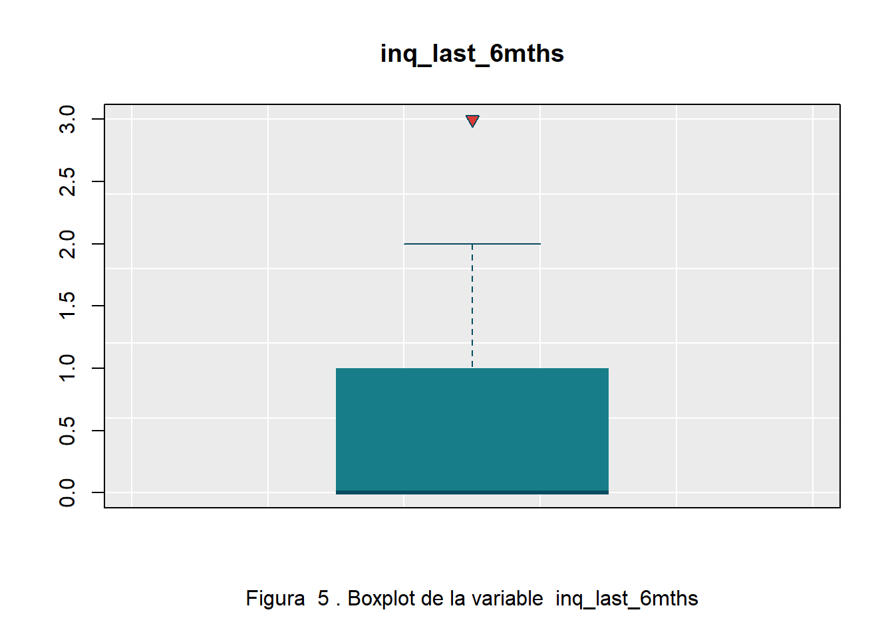
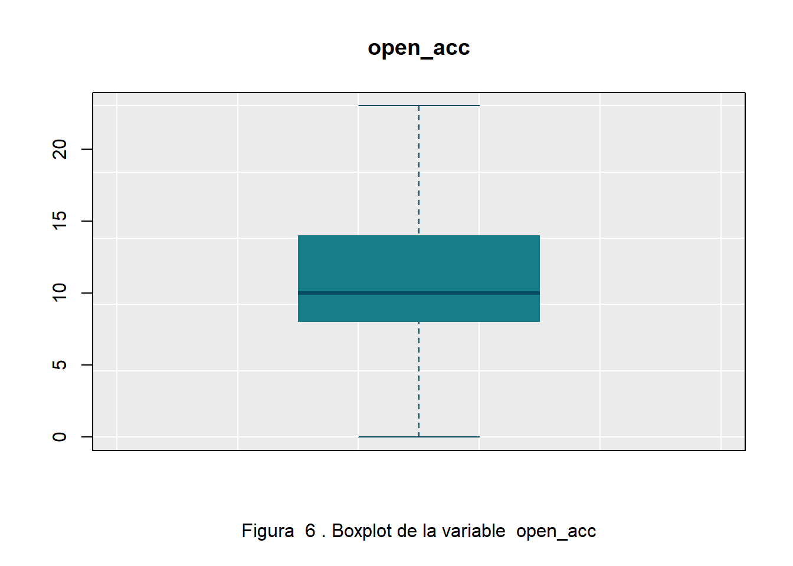
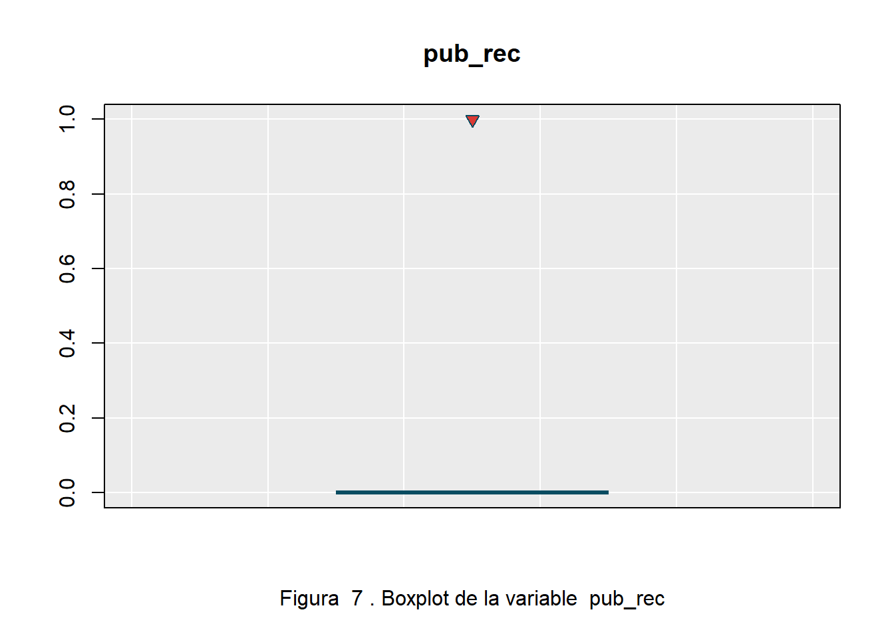
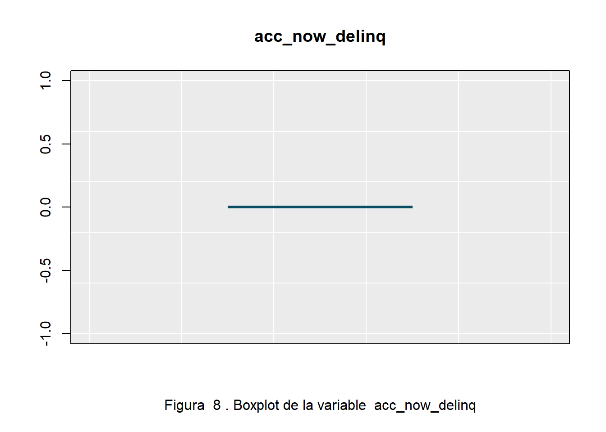
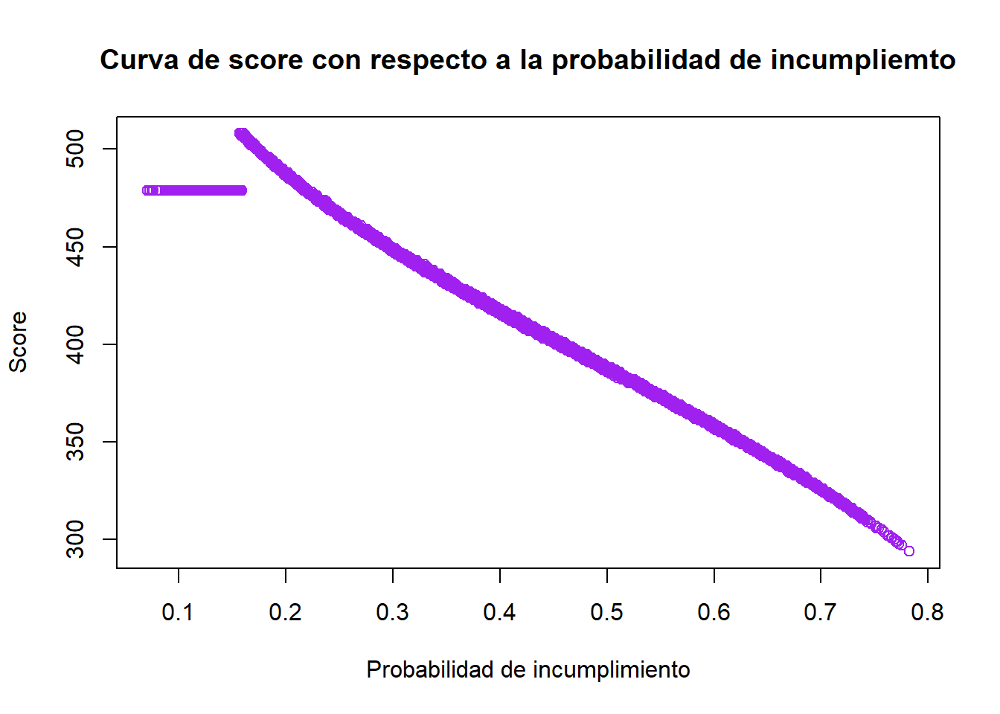

Modelo de riesgo de crédito
1- Contexto del problema
Los bancos al ser prestamistas , poseen el riesgo de tener perdidas con los créditos dado ya que pueden exisitir clientes que sean morosos con los pagos. Se desea crear un modelo que permita predecir, mediante un score calculado con la información del usuario que posee el crédito, la probabilidad de incumplimiento de sus obligaciones financieras en los siguientes 12 meses a la fecha de originación de su crédito. Este modelo ayudaría en a los bancos en sus tomas de decisiones sobre sus clientes. Para la creación del modelo, se uso utilizó un trabajo realizado por Ng Yong Kad (2020), y también la documentación sobre la librería scorecard obtenida por CRAN (2022).
Para la creación del modelo, se utiliza un dataset que posee 45 variables y 466285 registros.
2- Procesamiento de los datos
Inicialmente se eliminan variables que poseen un gran número o en su totalidad valores representados con N/A. También se eliminan variables que no son predictoras, como las variables de identificación, url de una página, entre otras.
Teniendo en cuenta lo anterior, se eliminan las variables : dti_joint, open_il_6m, open_il_24m, total_bal_il, open_rv_12m, max_bal_bc, total_cu_tl, annual_inc_joint, verification_status_joint, open_acc_6m, open_il_12m, mths_since_rcnt_il, il_util, open_rv_24m, all_util, inq_fi, inq_last_12m,id, member_id, url, desc, zip_code, application_type, policy_code, mths_since_last_delinq, mths_since_last_record, mths_since_last_major_derog, tot_coll_amt, tot_cur_bal, total_rev_hi_lim.
También se eliminan las variables: funded_amnt, funded_amnt_inv, dti, delinq_2yrs, revol_bal, revol_util, total_acc, out_prncp, out_prncp_inv, total_pymnt, total_pymnt_inv, total_rec_prncp, total_rec_int, total_rec_late_fee, recoveries, collection_recovery_fee, last_pymnt_amnt, collections_12_mths_ex_med, grade, pymnt_plan, initial_list_status, ya que son variables que no se pueden utilizar para predecir si a una persona que se le va a otorgar el crédito, cumpla o no con este.
Adicionalmente, en el dataset tenemos variables de tipo numéricas y de tipo character, para facilidad en el trabajo, se cambian las variables de tipo character a factor.
Para este trabajo, se va a trabajar con las siguientes variables:
Loan_amnt: Cantidad de dinero solicitado por el prestatario.
Int_rate: Tasa de interés.
Installment: Pago mensual adeudado por el prestatario si se origina el préstamo.
Annual_inc: Ingresos anuales reportados por el prestatario.
Inq_last_6mths: Número de veces que el prestatario ha solicitado préstamos durante los últimos 6 meses.
Open_acc: Créditos abiertos del prestatario.
Pub_rec: Número de reportes públicos del prestatario.
Acc_now_delinq: Número de cuentas en las que el prestatario esta en mora.
Term: Cantidad de cuotas.
Emp_length: Cantidad de años que el prestatario lleva trabajando.
Home_ownership: Estado en que se encuentra la vivienda del prestatario.
Verification_status: Verificación de los ingresos conjuntos de los copretatarios.
Purpose: Propósito del crédito.
Loan_status : Estado actual del prestamo, esta es la variable objetivo que indica si la persona cumple o incumple con el pago del crédito.
2.1- Análisis de Variables numéricas
Se modifican los valores de las variables numéricas que posean pocos valores N/A, por el valor de la mediana de cada atributo.
También se analiza la existencia de datos atípicos en las variables numéricas. Para esto se crea una función que permita identificar las variables que poseen datos atípicos, y estos se escalan de la siguiente forma:
Los que se encuentran por encima del rango máximo, se escalan al percentil 95.
Los que se encuentran debajo del mínimo, se escalan al percentil 5.
Al realizar lo anterior, identificamos la modificación los valores outliers en los siguientes boxplots para cada variable numérica.







2.2- Modificación de la variable objetivo
En el dataset, la variable objetivo es la columna “loan_status”, en esta se encuentran los siguientes valores:
Current
Fully Paid.
Late (31-120 days).
In Grace Period.
Does not meet the credit policy. Status:Fully Paid.
Late (16-30 days).
Default.
Does not meet the credit policy. Status:Charged Off.
Para la creación de este modelo, las variables “Default” y “Late (31-120 days)” serán clasificadas como “Cumple”, y las demás como “Incumple”.
En la Tabla 1, se observa la cantidad de registros que poseen calificación “Cumple” e “Incumple”.
| Variable objetivo loan_status | Cantidad |
|---|---|
| Cumple | 458553 |
| Incumple | 7732 |
[1] "Tabla 1. Tabla del conteo de la variable loan_status"Debido al desbalanceo que se presenta en los registros, se utiliza una función de la librería ROSE, que permite realizar un balanceo en el dataset,. En la Tabla 2, se observa lo anterior:
| Variable objetivo loan_status | Cantidad |
|---|---|
| Incumple | 458935 |
| Cumple | 458553 |
[1] "Tabla 2. Tabla del nuevo conteo de la variable loan_status"Debido a la alta cantidad de registros que existen en el dataset, se procede a usar una muestra del 8% de todo el dataset para la creación del modelo.
Scorecards
Para la creación del scorecard, se utiliza un liberia llamada “Scorecard”, la cual permite mediante sus funciones poder crear el modelo de manera óptima. Como primer paso, se realiza un filtrado de los datos ya procesados anteriormente utilizando la función “var_filter”. Luego, se procede a la creación de los contenedores finos por variable (o en ingles fine bins). Y luego, se obtienen los valores woe para cada registro por cada una de sus variables.
[INFO] filtering variables ... [INFO] creating woe binning ... [INFO] converting into woe values ... Ya por último, se obtiene el objeto denominado “Card”, el cual nos permite obtener el score de acuerdo a los valores de las variables.
Analisis del modelo obtenido
Una vez obtenido el modelo que genera el score, se analiza con la siguiente gráfica el score asociado con la probabilidad de incumplimiento de pago del cliente.

[1] "Figura 27. Curva de score con respecto a la probabilidad de incumpliemto"En Figura 27, podemos observar que a medida que la probabilidad se vuelve 0 (Cliente cumple con el pago del crédito), el valor del score tiende a crecer. Mientras que cuando probabilidad se vuelve 1 (Cliente incumple con el pago del crédito), el score tiende a disminuir.
Análisis de las variables empledas en el modelo
| Estimate | Std. Error | z value | Pr(>|z|) | |
|---|---|---|---|---|
| (Intercept) | 0.01217 | 0.007717 | 1.577 | 0.1149 |
| loan_amnt_woe | 0.2595 | 0.08791 | 2.952 | 0.00316 |
| int_rate_woe | 0.8985 | 0.01662 | 54.07 | 0 |
| installment_woe | 0.6744 | 0.0739 | 9.125 | 7.168e-20 |
| annual_inc_woe | 1.654 | 0.07113 | 23.25 | 1.274e-119 |
| open_acc_woe | 0.9795 | 0.05965 | 16.42 | 1.336e-60 |
| term_woe | 0.03798 | 0.0355 | 1.07 | 0.2847 |
| verification_status_woe | 0.4574 | 0.03891 | 11.75 | 6.705e-32 |
| purpose_woe | 0.3075 | 0.06864 | 4.48 | 7.459e-06 |
(Dispersion parameter for binomial family taken to be 1 )
| Null deviance: | 101750 on 73398 degrees of freedom |
| Residual deviance: | 95371 on 73390 degrees of freedom |
[1] "Tabla 3. Tabla de resumen de las variables usadas en el modelo"Por medio de la Tabla 3, identificamos las variables que hacen mas riesgosa a una persona. Estas son aquellas que tienen un p-valor menor al valor de significancia (0.05) en la columna Pr(>|z|).
Referencias
Ng Yong Kad. (2020). Credit Scoring Development Using R. 2022, 15 de ocubre 2022, de rpubs. Sitio web: https://rpubs.com/ngyongkad/scorecard
CRAN. (2022). Package ‘scorecard’. 2022, 15 de ocubre 2022, de Package ‘scorecard’. Sitio web: https://cran.r-project.org/web/packages/scorecard/scorecard.pdf